SkyyRose · Collection films · Creative development
The real bomber. Four stories. One train.
Short excerpts of the actual Black Rose Sherpa Bomber lead into the same man meeting Skyy in her matching look. Each collection gets a short story; the train brings them together in an approximately 40-second commercial.
Product excerpts prepared · br-006
Your bomber. Clearly shown.
Three short selections show the actual garment: front silhouette and chest detail, rear rose and construction, then the front and fabric movement. These excerpts will be woven between the new train scenes.
192 source-matched frames
8.008 seconds · 720 × 1280 · original 23.976 fps
Zero audio tracks · lossless frame-accurate selections
Every selected decoded frame matches its source frame. The original file and complete silent master are preserved.
The same man from the supplied footage leads the new Black Rose train scenes. Product-card imagery supplies garment details only. Generated identity continuity still needs rendered review.
Signature · sg-009
The First Light
A passenger believes the carriage is empty. A small red rose reflected in the window leads his eyes to Skyy in the matching Sherpa. He makes room. As the train clears the structure, the narrow reflection becomes the full sculpted gold rose from the hero outside the panoramic glass. The tiny matching detail has led to the whole world.
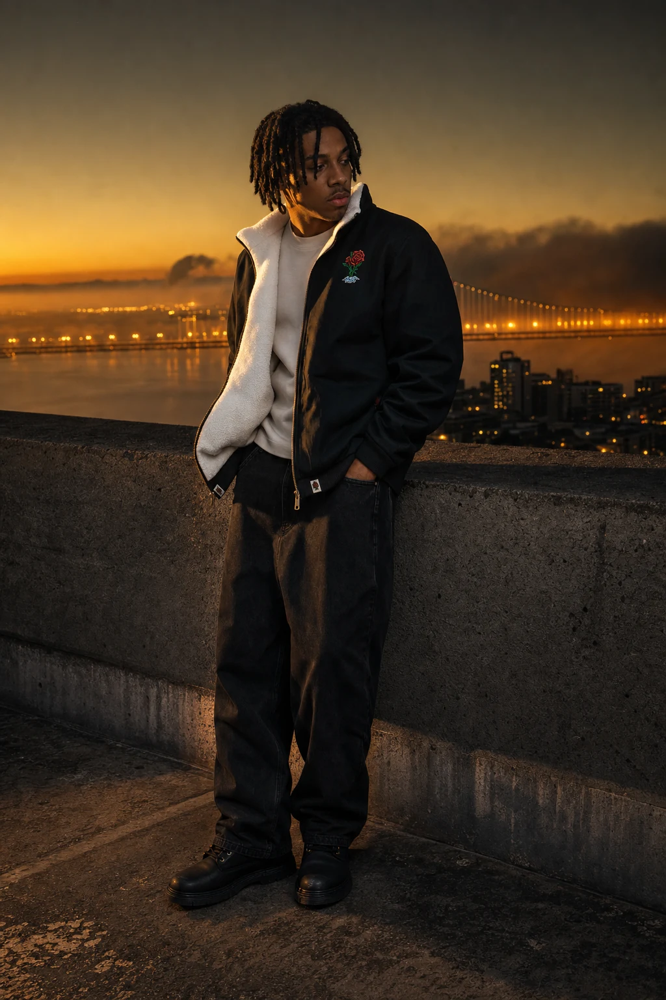
Signature product-card model
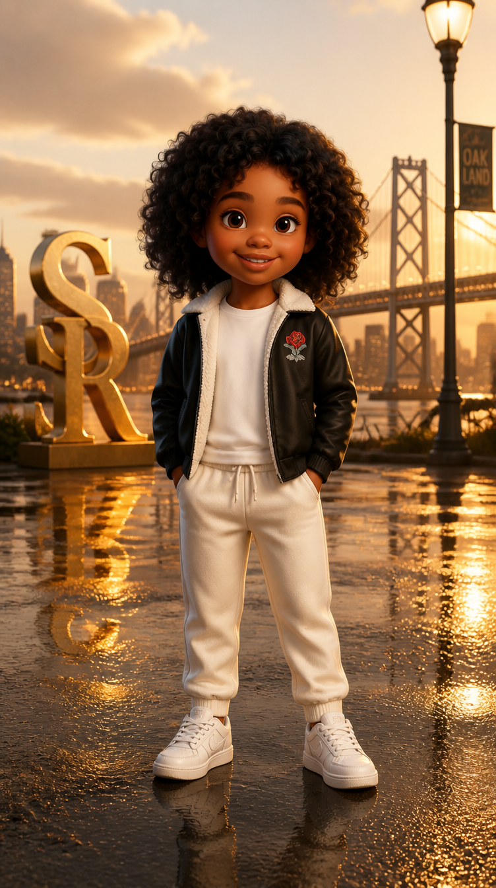
Archived Signature Skyy
Collection hero reference · selected architecture and sculpture only. Cast comes from the product and archive references.
0–3
Open on the source model's red rose and white-lined black jacket, with his face already readable.
3–7
A restrained reframing reveals Skyy beside the adjacent window wearing the corrected matching Sherpa.
7–12
He opens a hand toward the window place; Skyy looks from the shared chest roses toward the glass.
12–17
The last dark bridge beam slides past. The panoramic window reveals the monumental gold rose and source metallic curve at scale, with a believable distant landscape.
17–20
Hold both matching jacket fronts in warm neutral light. Skyy and the model exchange a quiet nod.
The reveal. An intimate shared garment detail expands into the full gold hero sculpture seen from the train.
Black Rose · br-006 · Approximately 20-second standalone
The Night Car
Open on the actual bomber in the supplied footage. Cut to the same man meeting Skyy in the matching bomber aboard the night carriage. Their glance motivates short source inserts showing the garment front and rear rose. Return to their encounter, then to the real bomber's front as its fabric catches light. The train clears the bridge structure and reveals the monumental silver rose. Product recognition drives the story from the first image to the final paired look.
Actual garment and film lead · source footage selected for product readability
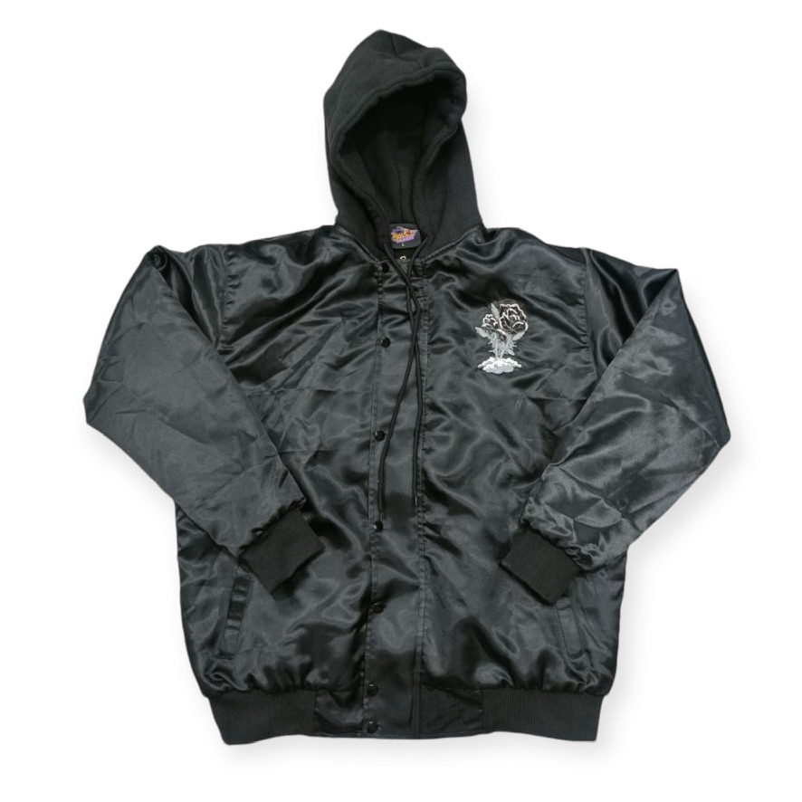
Physical garment reference · Black Rose Sherpa Bomber
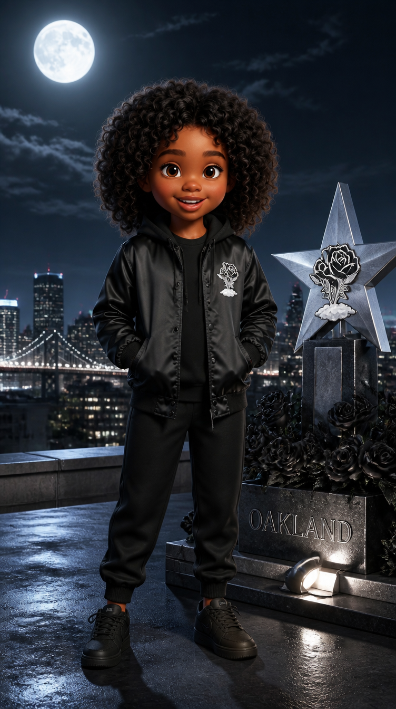
Skyy’s matching archive look · reconcile garment details before generation
The black star and silver rose become the large reveal beyond the train window.
0–2s
Actual source front: establish the performer, black satin bomber, chest rose and construction before introducing the stylized world.
2–5s
New train encounter: the same performer notices Skyy's matching bomber. Keep both fronts clear and the monument hidden.
5–8s
Actual source inserts: one second of the remaining front selection, followed by two seconds of the rear rose and bomber shape.
8–11s
New train reaction: their eye line connects; the final bridge rib still withholds the outside landmark.
11–14s
Actual source front: hold the real garment and fabric movement for three seconds.
14–19s
New large reveal: bridge structure clears the window, exposing the source black star and silver rose, with the matching bomber pair in the foreground.
19–20s
New payoff: the man and Skyy exchange a small nod; garment fronts own the last image.
The reveal. The actual garment's rose detail connects to Skyy's matching look and the source monument. Hold front views before and after the rear detail so the jacket remains unmistakable.
The model sits beside an empty place in a crimson carriage. He sees Skyy at the doorway in the matching corrected bomber. He offers the seat. A passing band of light reveals the thorn-lined arch behind them and, beyond it, a real rose under glass. The emotional reveal is an empty space becoming a shared one.
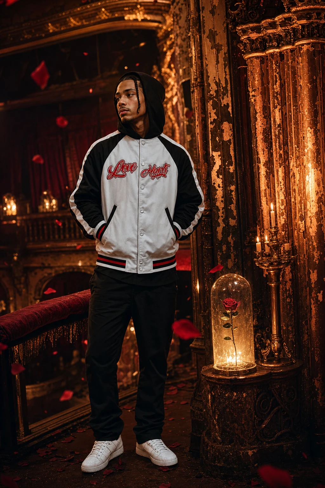
Love Hurts product-card model
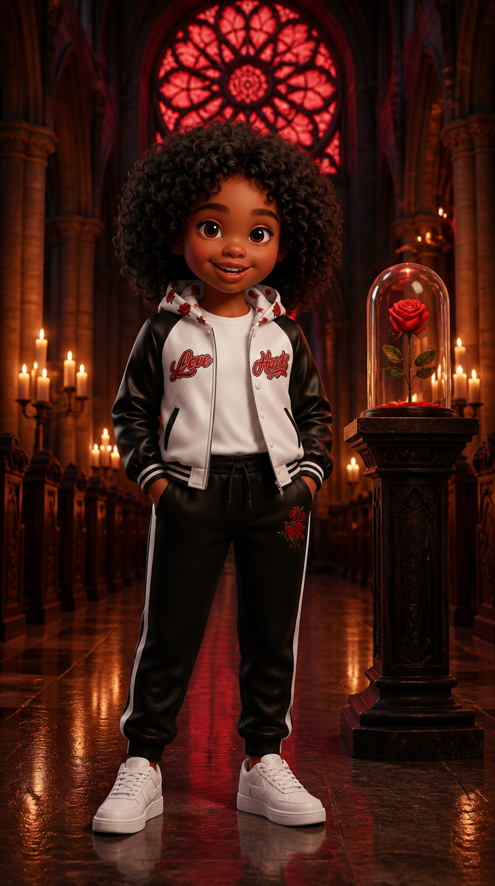
Archived Love Hurts Skyy
Collection hero reference · selected architecture and sculpture only. Cast comes from the product and archive references.
0–4
Readable white/black bomber front beside an empty window place; red surroundings do not tint the white garment.
4–8
Skyy appears at the internal doorway; one accepting look, exact jacket details and separate identities.
8–12
The model offers the seat with a single open hand. Cut rather than generate a complicated sit-down.
12–17
Wider seated or standing source-supported composition reveals the hero's pointed arch and fixed cloche rose through aligned carriage doorways.
17–20
Matching jacket fronts and exchanged glance hold the final product image.
The reveal. Depth through successive arches reveals the cloche rose; the empty place gains emotional meaning.
Kids Capsule · kids-001 / kids-002
Your Turn
Skyy reaches the last carriage. The doors withhold what is inside. When they open, a real child in the matching red set meets her at eye level. The camera reveals the crown-topped throne, then a clean cut introduces the purple pair. The child offers Skyy the place beside the window: the next generation now gives the invitation.
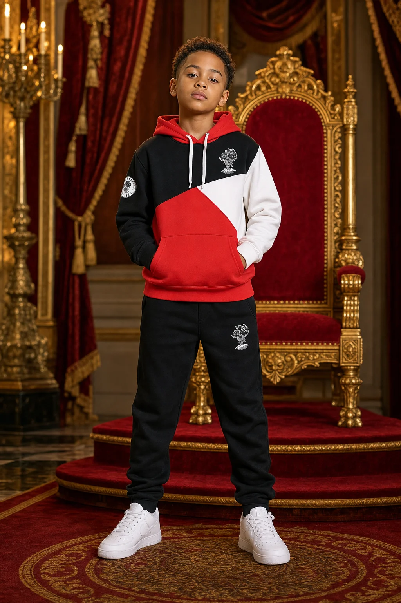
Red Kids product-card model
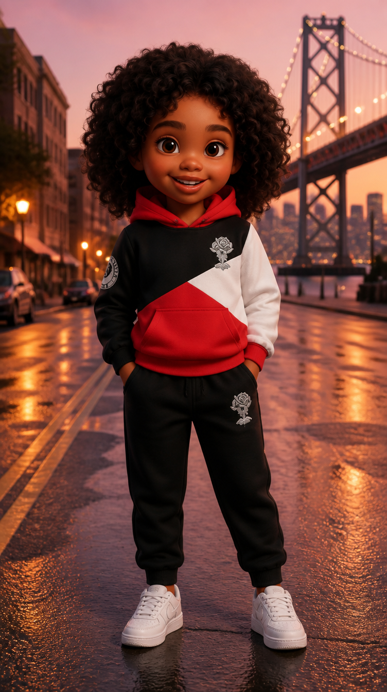
Archived red Kids Skyy
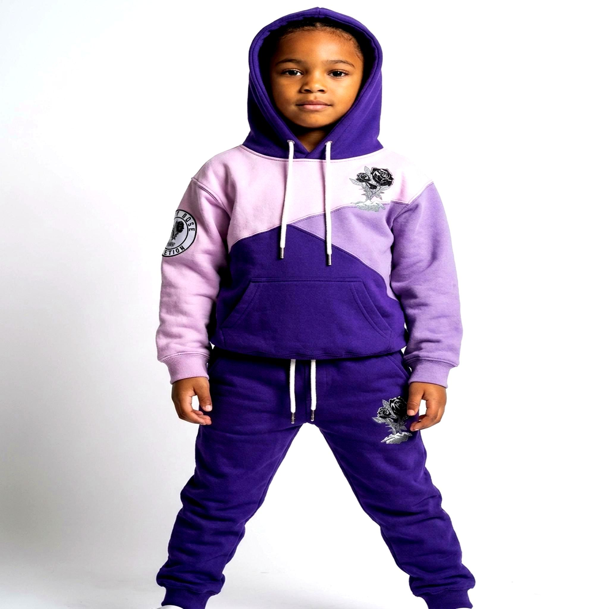
Verified alternate purple Kids model
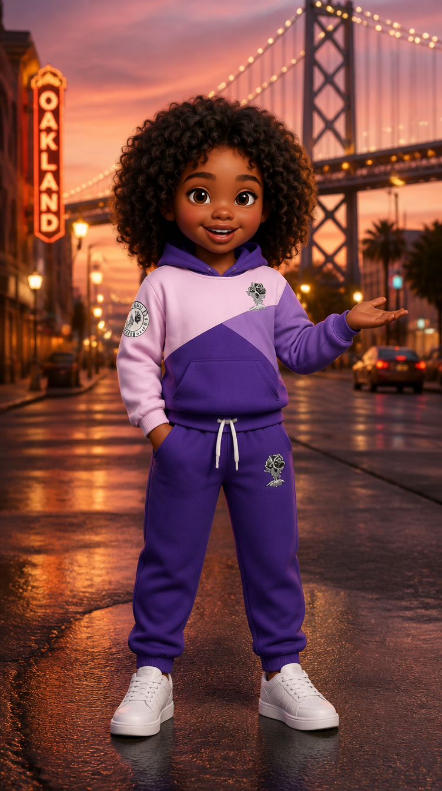
Archived purple Kids Skyy
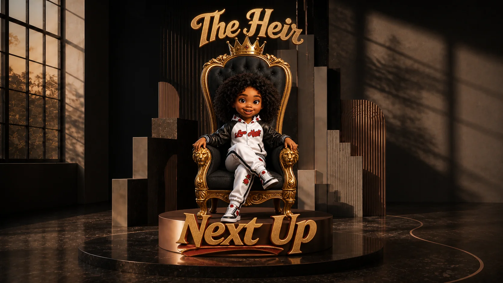
Collection hero reference · selected architecture and sculpture only. Cast comes from the product and archive references.
0–3
Show only the sealed last doorway and Skyy's red-outfit shoulder edge; withhold the throne and photographic child.
3–8
Doors open onto the red-set child and Skyy, full fronts visible with corrected drawstrings and patches.
8–12
Camera pulls back to expose the complete crown, black tufted throne, carved gold arms and citylike wall ribs from the Kids hero. The real child stays the visual lead.
12–16
Separate clean editorial cut to the purple child and matching Skyy, full outfit view. Never recolor or morph the red child.
16–20
Return to the red pair. Child offers the window place; Skyy nods. Kids outfit and child's face own the last frame.
The reveal. Withheld doorway opens into an entire observation carriage built around the throne. The final invitation reverses the adult-led beginning.
Main commercial
The stories come together.
Signature opens the invitation. Black Rose shows the real bomber, connects the same man with matching Skyy, and reveals the silver-rose monument. Love Hurts turns an empty seat into a shared place. Kids takes the final carriage and returns the invitation.
The revised main sequence is approximately 40 seconds: Signature 8, Black Rose 12, Love Hurts 8 and Kids 12. The standalone Black Rose story is approximately 20 seconds, including eight seconds of real footage. Short excerpts replace the previous full-source requirement. New scenes and combined films remain in development.
All labels on this page are review notes. New film footage has no added captions, titles or voiceover. Each archive outfit must retain the actual matched product details.